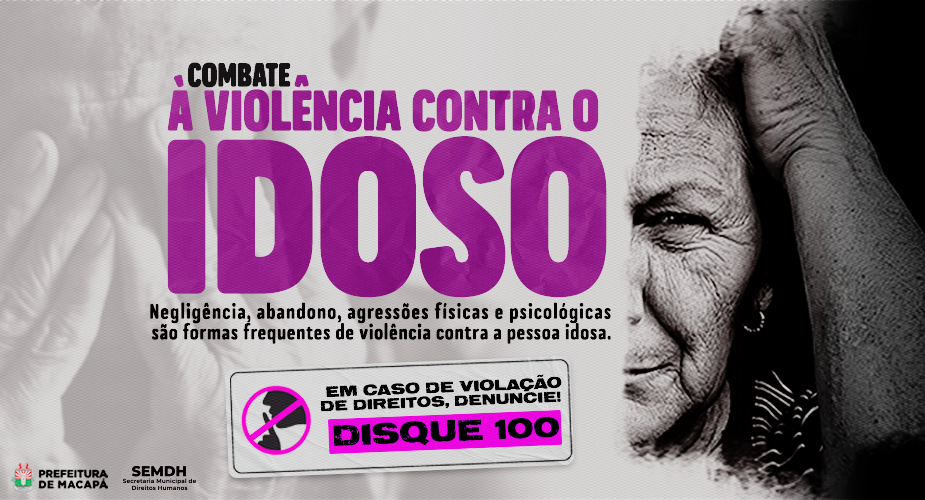
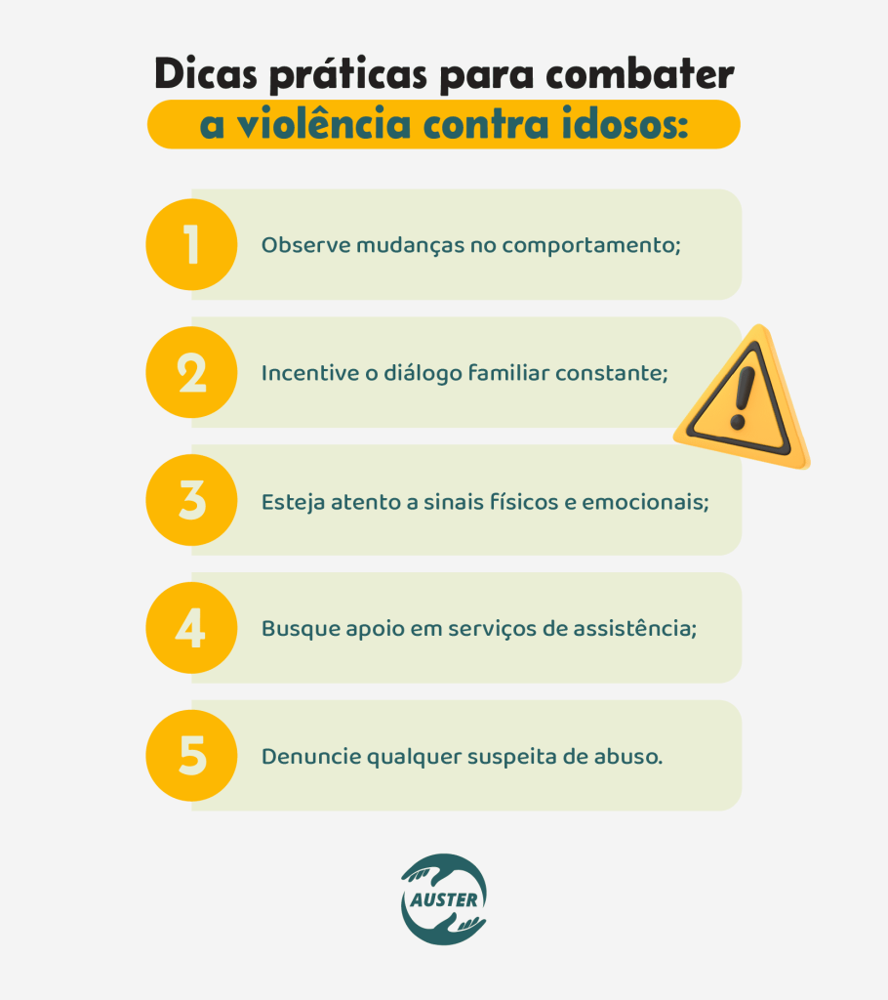

Como denunciar
O silêncio diante da violência contra a pessoa idosa também contribui para que esse problema continue acontecendo. Proteger os idosos significa defender sua dignidade, seu bem-estar e seu direito de viver com respeito e segurança. Sempre que houver suspeita ou confirmação de maus-tratos contra pessoas com 60 anos ou mais, é fundamental denunciar. A família e a sociedade têm o dever de colaborar para garantir proteção, inclusão, liberdade e uma vida digna para a pessoa idosa.
clique aqui para ter mais informações

Como previnir
A prevenção da violência contra a pessoa idosa começa com o respeito, o cuidado e a valorização de sua dignidade. É importante fortalecer os vínculos familiares, oferecer apoio emocional e garantir que os idosos participem ativamente da sociedade, evitando situações de isolamento e abandono. Além disso, a população deve estar atenta aos sinais de maus-tratos e denunciar qualquer situação de violência. Promover a empatia, a inclusão social e o acesso aos direitos da pessoa idosa é fundamental para construir uma sociedade mais justa, segura e acolhedora para todos.

Direitos da pessoa idosa
Saúde
A pessoa idosa tem direito ao acesso à saúde de forma gratuita, digna e prioritária. Isso inclui consultas médicas, exames, medicamentos, tratamentos e acompanhamento necessário para garantir qualidade de vida, segurança e bem-estar.
Respeito
Todo idoso deve ser tratado com respeito, educação e dignidade, sem sofrer discriminação, humilhações ou qualquer tipo de violência. Valorizar a pessoa idosa é reconhecer sua importância, experiência e contribuição para a sociedade.
Proteção
A pessoa idosa possui direito à proteção contra abandono, negligência, maus-tratos e qualquer forma de abuso físico, psicológico ou financeiro. A família, a sociedade e o Estado têm o dever de garantir sua segurança e bem-estar.
Transporte
Os idosos têm direito à gratuidade ou prioridade nos transportes públicos, garantindo mais acessibilidade, autonomia e facilidade de locomoção. Esse direito contribui para a inclusão social e o acesso aos serviços essenciais.
Prioridade
A pessoa idosa tem direito ao atendimento prioritário em filas, bancos, hospitais, mercados e serviços públicos. Esse direito busca oferecer mais conforto, agilidade e respeito às necessidades dos idosos no dia a dia.
Vagas Reservadas
Os idosos possuem direito a vagas reservadas em estacionamentos públicos e privados, localizadas em áreas de fácil acesso. Essas vagas ajudam na mobilidade, segurança e acessibilidade da pessoa idosa.